Keyboard and windows — mock-ups
5 Nov 26 · the three backlog items on one branch · drawn on the real app, nothing built yet. Tap a picture to see it full size.
To answer now — reply "all as recommended", or by number
- Top bar free over three windows — Undo and Redo stay pressable over "Jump to a date", the day-details window and the document viewer. Recommend: yes. Pictures
- The keyboard's ring on the Scheduler Board — menus, day chips and the day name reachable by the keys, wearing the app's cyan ring. Recommend: yes. Pictures
- Traffic on View-only Sched — an admin sees the plain list there, as a member does; editing stays on Edit Schedule and the board. Recommend: yes. Pictures
- A clock the app can't read is said once, not once for every line of the wave. Recommend: yes. Pictures
1 · Top bar free over three windows
Today these windows grey out the whole screen, the top bar too, so Undo and Redo can't be pressed while one is open. The Traffic window already works the new way (since 30 Oct 26): the grey starts under the bar. Undo and Redo work with the window open; any other bar button (a page name, the bell, ✓ Done) closes the window first, then does its job.
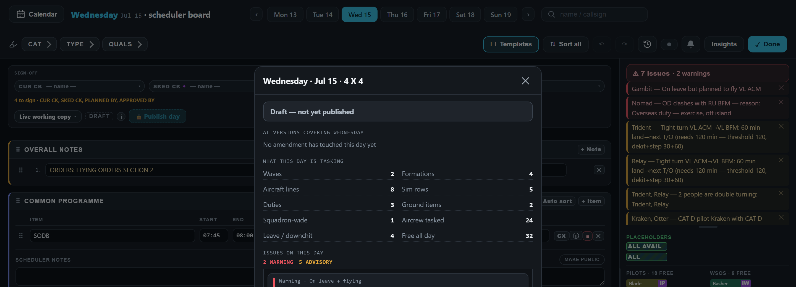
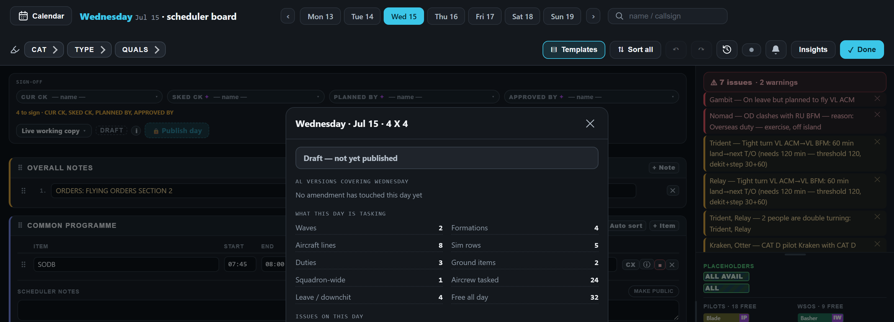
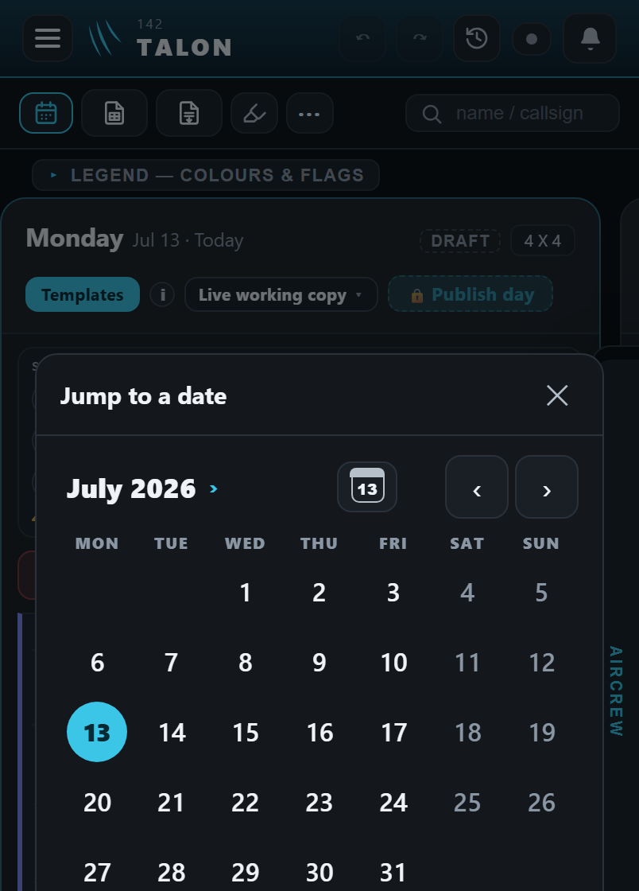
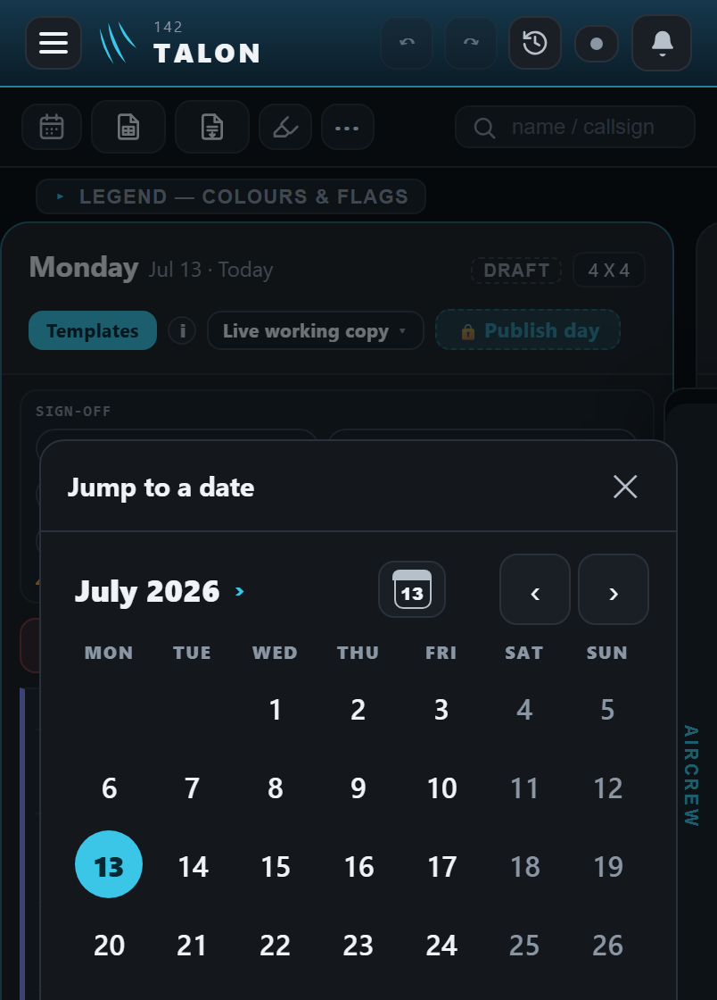
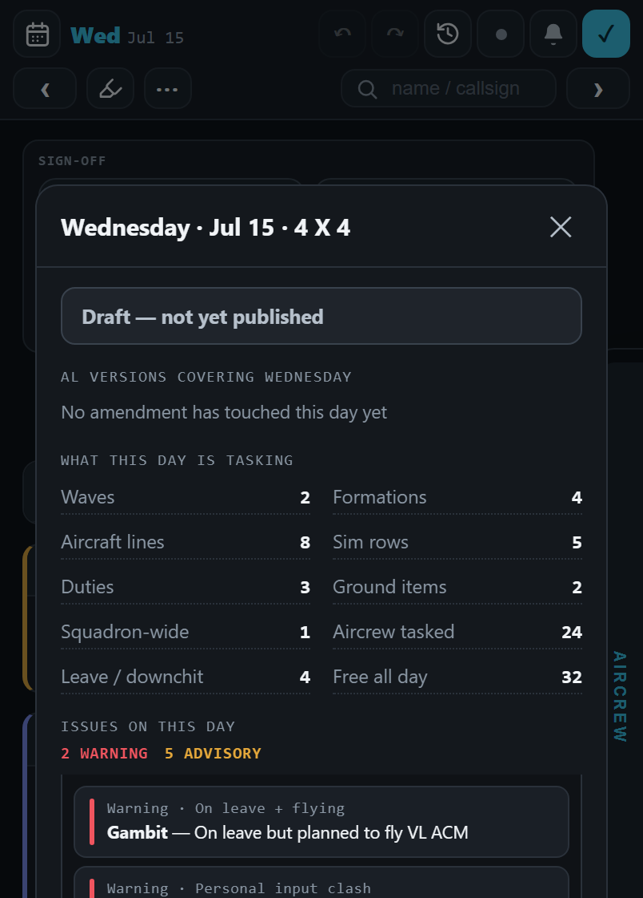
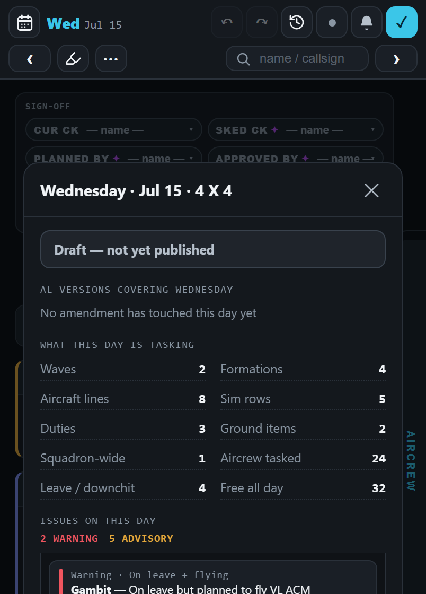
The document viewer would look the same as these. On a desktop, "Jump to a date" barely greys the page, so the picture changes little there — what changes is that the bar can be pressed.
2 · The keyboard's ring on the Scheduler Board
On a desktop with a keyboard, some board controls can only be used with the mouse. The ring is the one the app already uses for the keyboard (the cyan outline); it shows only when the keys are used, never after a click.
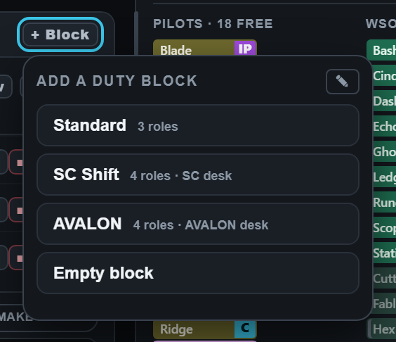
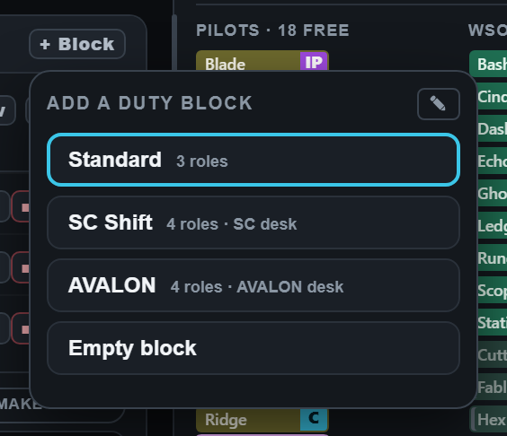
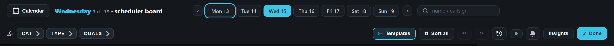
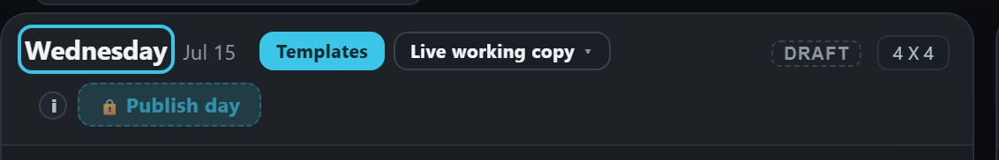
3 · Traffic on View-only Sched
View-only Sched changes nothing, and has no Undo. But an admin's Traffic window there today has typing boxes, ✕, Add row and Done — a change made there can't be undone from that page.
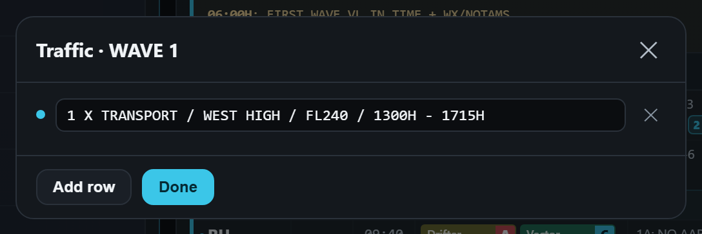
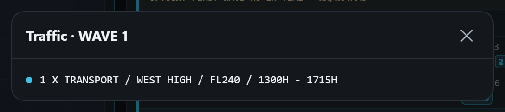
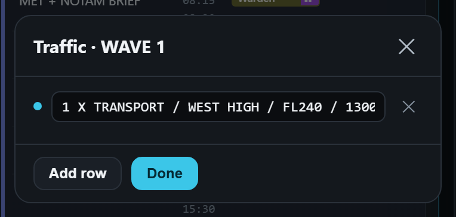
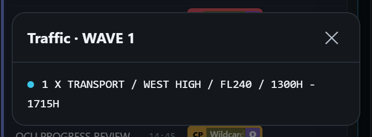
4 · A clock the app can't read is said once
A wave with three lines and no take-off times yet, and an in-time line typed as "25:90". The red note under it says the same sentence three times — once for each line of the wave.
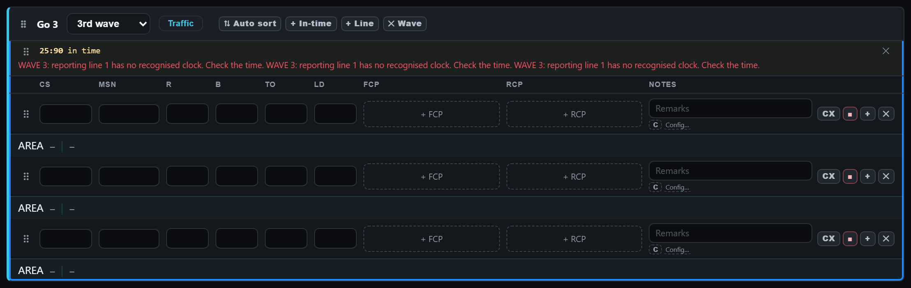
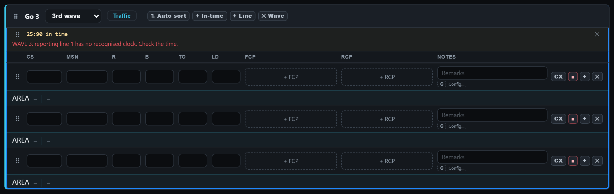
Also in the batch — nothing new to see
- While the Scheduler Board is open, Tab stays inside it instead of walking into the week behind.
- Escape closes the Sort all box (today only Cancel, ✕ or a click outside do).
- After the OIL question is answered, the keyboard goes back to the box you were typing in, so Tab carries on from there.
- A test for the red note under a wave's in-time lines being kept up to date.
- With the bar free (1), Escape still closes the window after you've pressed Undo.